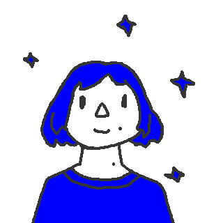 Tervist! Minu nimi on Tanel. Olen pärit Põlvast ning kolisin alles hiljuti "suurde" linna Tartusse. Põlvas õppisin kohalikus Ühisgümnaasiumis kuni 10. klassini, kust edasi läksin keskkooli lõpetama Tartu Jaan Poska Gümnaasiumisse. Hetkel olen värske Tartu Ülikooli informaatikatudeng.
Kuna väiksena sai omajagu Froggerit, Dungeon Keeperit, Super Mario ROM Hacke ning muid mänge mängitud, siis nii tekkis ka minu huvi programmeerimise vastu.
Lisaks programmeerimisele ja väikeste arvutimängude loomisega tegelen ka maalimise, pixel art animatsioonide loomise, võrkpalli ja Netflixi vaatamisega.
Siin on mõned asjad millega ma hakkama olen saanud:
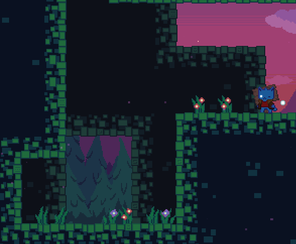 Poolik mänguprojekt ühe silmaga kassist, kes ronib mäge. Tema teine silm võimaldab tal hüpata läbi keeruliste takistuste. Praegu on see üks minu suurimaid projekte mis (loodetavasti) saab kunagi tehtud. Väga palju mõtteid on selle mängu erinevate maailmate ja takistuste jaoks, kuid poole keerulisem on neid mõtteid realiseerida. 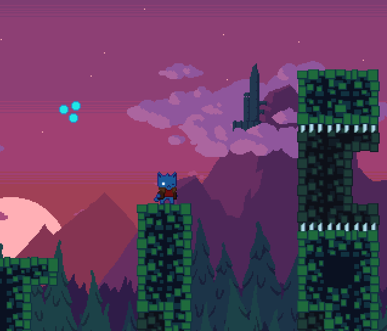
Minu digitaalkunsti hobi on lähedalt seotud minu arvutimängu huviga. Pixel art on minu meelest nii täis iseloomu ja omatmoodi üks väga kergelt haarav kunstimeedium.
Pea igaüks saaks hiirega midagi huvitavad sellises stiilis teha. Animeerimine tuleb pixel stiiliga käsikäes.
Alguses kasutasin ma enda piltide loomiseks
GraphicsGale'i, kuid nüüd kasutan
Asprite'i.
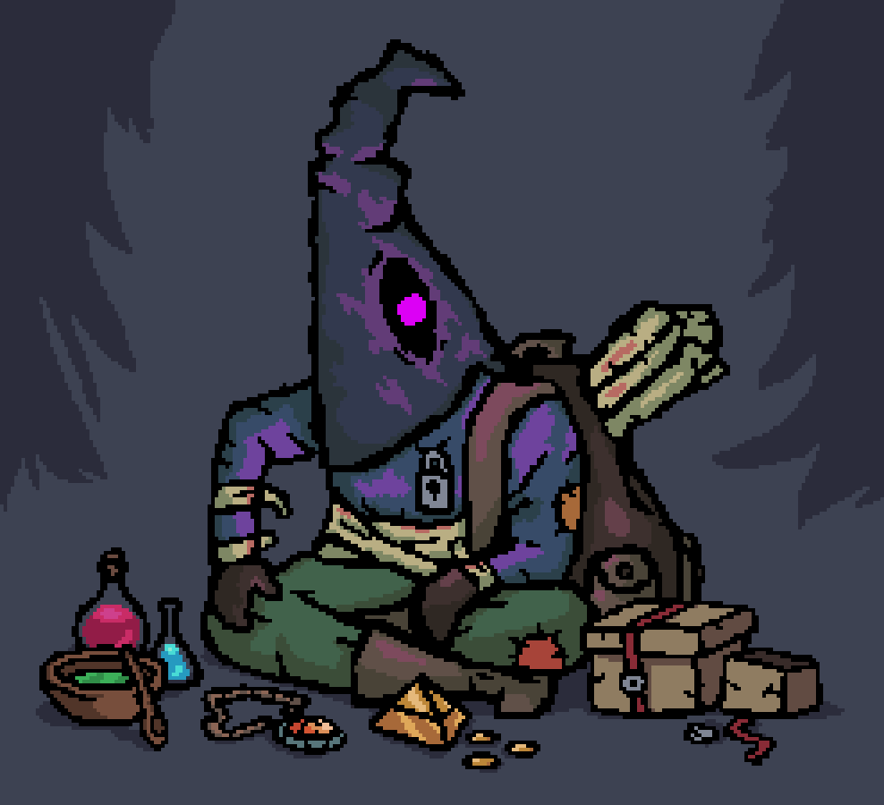
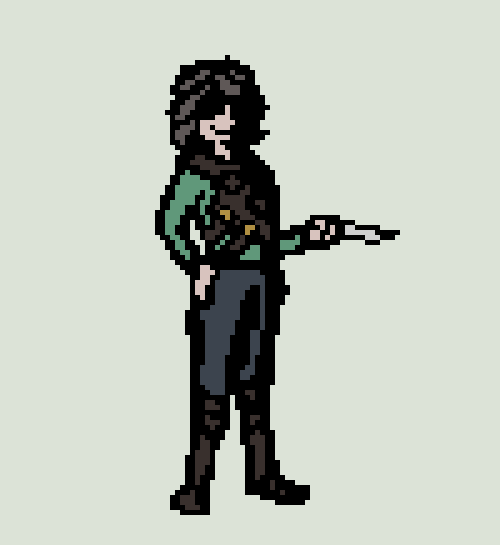
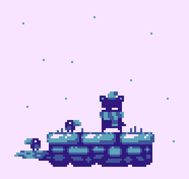
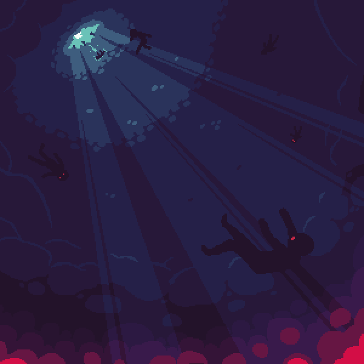
Nagu varem sai mainitud, tegelen ka vabal ajal maalimisega. Kui keskkooli kunstiajaloo tund mulle midagi andis, siis oli huvi impressionismi vastu. Kui täiesti aus olla, siis mulle meeldib see stiil eelkõige sellepärast, et see ei nõua pea üldse pingutust. Loo natukene fookusest väljas loodusmaal ning see ongi impressionism. Siin on mõned maalid, mis ma eelneva tehnikaga loonud olen: 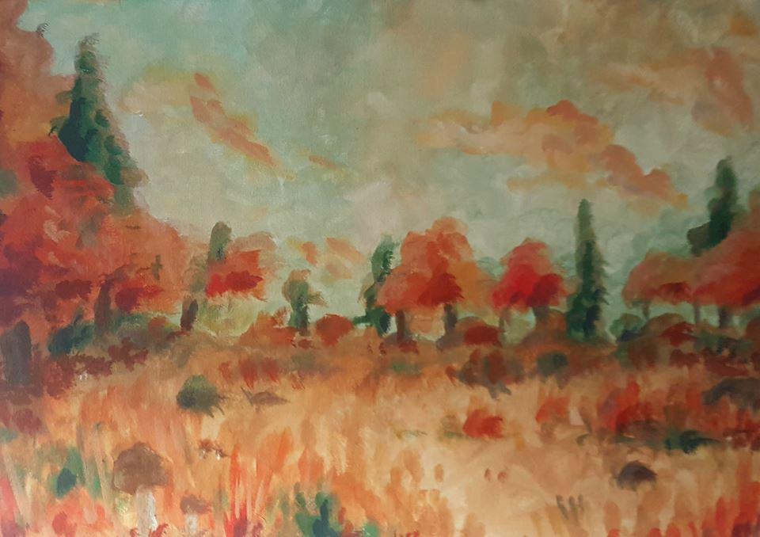 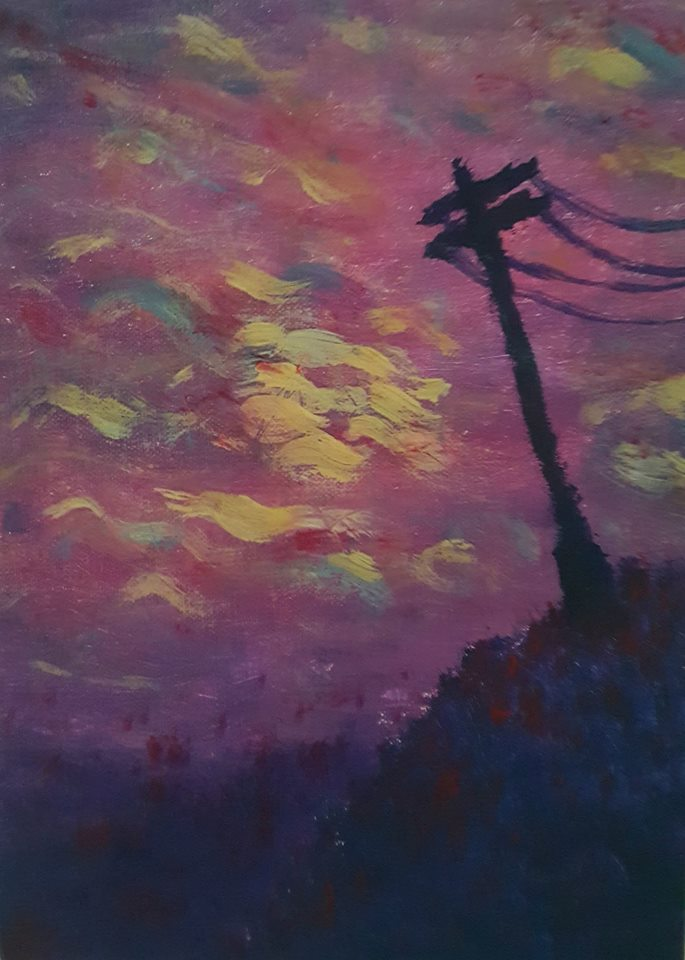 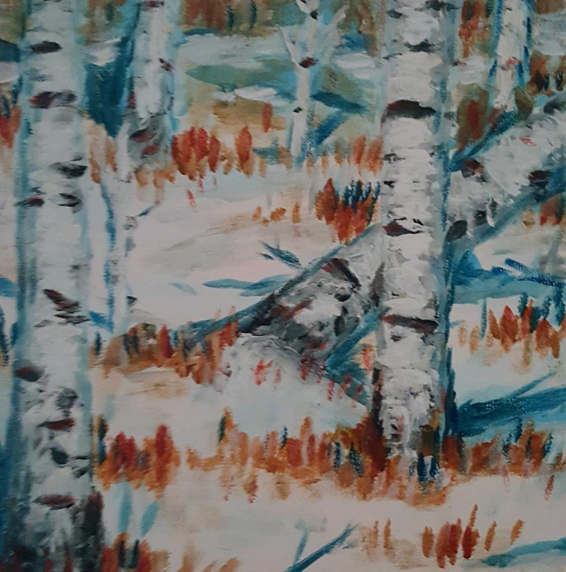 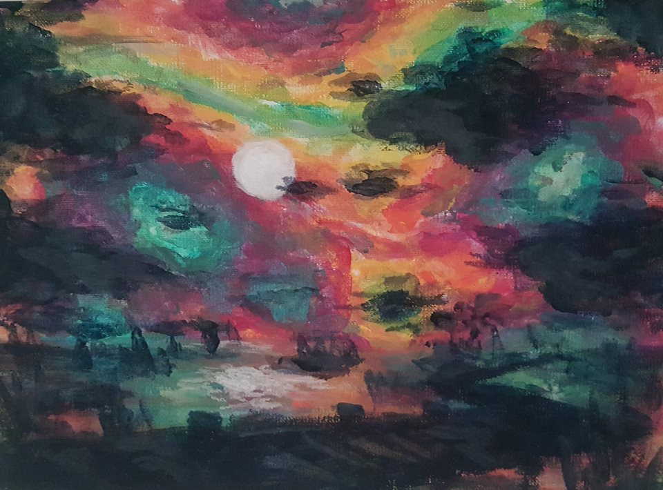